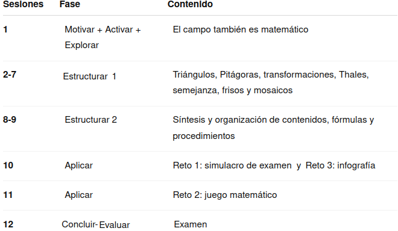

Justificación didáctica
Esta Situación de Aprendizaje acerca la geometría a un contexto cercano y motivador: el fútbol. El alumnado se convierte en un equipo de análisis matemático que utiliza triángulos, Pitágoras, transformaciones, Thales, semejanza, áreas, perímetros y volúmenes para interpretar elementos del campo y del estadio.
La propuesta favorece un aprendizaje competencial, significativo, activo y participativo, desarrollando la resolución de problemas, el razonamiento matemático, la comunicación, la competencia digital, la autonomía y el trabajo cooperativo. Se aplican los principios pedagógicos de la LOMLOE relacionados con la inclusión, la atención a la diversidad, el aprendizaje entre iguales, la integración de las TIC, la igualdad y el desarrollo sostenible.
Se trabaja el ODS 4 (Educación de calidad) mediante una propuesta inclusiva y accesible que utiliza diferentes recursos y formas de aprendizaje, y el ODS 5 (Igualdad de género) mediante la visibilización del deporte femenino y de referentes femeninos, evitando estereotipos de género.

Los materiales incorporan textos, imágenes, vídeos, esquemas y ejemplos visuales, facilitando el acceso a los contenidos desde diferentes vías.
Temporización
Se propone una duración aproximada de 12 sesiones de 55 a 60 minutos, adaptable a las características del grupo.

La fase 4, Estructurar, concentra el mayor número de sesiones, ya que constituye el núcleo de construcción y consolidación de los aprendizajes; en la temporización esta fase se ha desgranado en dos subfases debido a la naturaleza del contenido tratado en cada una. La distribución permite dedicar tiempo suficiente a la explicación paso a paso y a la práctica guiada, especialmente necesaria en un grupo con un nivel académico bajo.
La temporización podrá flexibilizarse en función del ritmo del grupo, ampliando el tiempo dedicado a aquellos contenidos que presenten mayores dificultades.
Producto final
El producto final será una infografía geométrica sobre el contenido tratado titulada:
⚽ MI DOSSIER GEOMÉTRICO DE LA SELECCIÓN
Deberá recoger los principales contenidos trabajados, incluyendo figuras geométricas, Pitágoras, transformaciones, Thales, semejanza, áreas, perímetros y volúmenes, junto con algún ejemplo resuelto.
La infografía se acompañará de una explicación mediante la propia voz del alumnado, en formato de audio, vídeo o audiodescripción.
Rúbrica
Para evaluar el producto final puede usar la siguiente rúbrica:
| 5. Excelente | 4. Notable | 3. Adecuado | 2. Básico | 1. Insuficiente | |
|---|---|---|---|---|---|
| 1. Corrección y dominio de los contenidos matemáticos | Los contenidos son completos, rigurosos y muestran un dominio sólido y preciso. (1.0) | Los contenidos son correctos y completos, con alguna imprecisión menor. (0.75) | Recoge los contenidos fundamentales, aunque presenta algunos errores. (0.5) | Los contenidos son incompletos y presenta errores relevantes. (0.25) | Presenta importantes carencias y errores conceptuales. (0.1) |
| 2. Aplicación y razonamiento matemático | Selecciona estrategias adecuadas, las desarrolla con rigor y justifica de forma clara los procedimientos y resultados. (1.0) | Utiliza estrategias adecuadas y justifica correctamente la mayor parte de los procedimientos. (0.75) | Aplica procedimientos adecuados, aunque la justificación es limitada. (0.5) | Predomina la aplicación mecánica de procedimientos y existen dificultades de razonamiento. (0.25) | No utiliza estrategias adecuadas o no justifica los procedimientos. (0.1) |
| 3. Organización y síntesis de la información | Selecciona, relaciona y jerarquiza la información con gran capacidad de síntesis, facilitando una visión global de los contenidos. (1.0) | La información está bien seleccionada y organizada, con una síntesis adecuada. (0.75) | La información es suficiente y está razonablemente organizada. (0.5) | Incluye información poco relevante, repetitiva o insuficientemente estructurada. (0.25) | La información aparece desorganizada y dificulta la comprensión. (0.1) |
| 4. Conexión y transferencia de los aprendizajes | Relaciona diferentes contenidos matemáticos y los aplica de forma flexible a situaciones nuevas, estableciendo conexiones relevantes. (1.0) | Establece conexiones entre contenidos y los aplica adecuadamente a situaciones contextualizadas. (0.75) | Relaciona algunos contenidos y aplica procedimientos conocidos en situaciones similares a las trabajadas. (0.5) | Tiene dificultades para relacionar contenidos o transferir los procedimientos a situaciones diferentes. (0.25) | No establece conexiones significativas ni consigue aplicar los aprendizajes a nuevas situaciones. (0.1) |
| 5. Comunicación matemática en la infografía | Utiliza con precisión el lenguaje, la simbología y las representaciones matemáticas; las explicaciones son rigurosas y claras. (1.0) | Utiliza adecuadamente el lenguaje y la notación matemática, con pequeñas imprecisiones. (0.75) | La comunicación matemática es comprensible, aunque presenta algunos errores o imprecisiones. (0.5) | Presenta errores frecuentes de notación, lenguaje o representación. (0.25) | La comunicación matemática resulta confusa o incorrecta. (0.1) |
| 6. Diseño, legibilidad y recursos visuales | La estructura visual, distribución, tipografía, imágenes y recursos gráficos están plenamente al servicio de la comprensión matemática. (1.0) | El diseño es claro, equilibrado y facilita la comprensión. (0.75) | El diseño es funcional, aunque presenta algunos aspectos mejorables. (0.5) | La organización visual dificulta parcialmente la lectura o comprensión. (0.25) | El diseño dificulta significativamente el acceso a la información. (0.1) |
| 7. Audiodescripción: claridad y precisión | La audiodescripción permite reconstruir con precisión la estructura, elementos visuales y contenidos matemáticos de la infografía sin necesidad de verla. (1.0) | Describe adecuadamente los elementos esenciales y los contenidos principales. (0.75) | Permite comprender la información fundamental, aunque omite algunos aspectos relevantes. (0.5) | La descripción es incompleta o poco estructurada. (0.25) | No permite comprender adecuadamente el contenido de la infografía. (0.1) |
| 8. Expresión oral y adecuación del audio | Discurso fluido, estructurado y preciso, con vocabulario matemático adecuado y excelente control del ritmo, volumen y entonación. (1.0) | Expresión clara y adecuada, con pequeñas dificultades de fluidez. (0.75) | El discurso es comprensible, aunque presenta algunas dificultades expresivas. (0.5) | Las dificultades de expresión afectan parcialmente a la comprensión. (0.25) | La comunicación oral resulta difícil de seguir. (0.1) |
| 9. Disposición ante la tarea y compromiso con el aprendizaje | Se implica de forma constante, afronta la tarea con iniciativa y muestra una disposición constructiva incluso ante las dificultades. (1.0) | Mantiene una implicación constante y una actitud favorable durante el desarrollo de la tarea. (0.75) | Realiza la tarea adecuadamente, aunque su implicación es irregular en algunos momentos. (0.5) | Muestra escasa iniciativa o implicación y necesita estímulos frecuentes para avanzar. (0.25) | Presenta una actitud poco favorable hacia la tarea y apenas se implica en su desarrollo. (0.1) |
| 10. Flexibilidad cognitiva y curiosidad matemática | Explora alternativas, formula preguntas, establece conexiones inesperadas y modifica sus estrategias cuando la situación lo requiere. (1.0) | Considera diferentes posibilidades y muestra interés por comprender y explorar más allá del procedimiento inmediato. (0.75) | Acepta alternativas y muestra curiosidad ante algunas situaciones, aunque tiende a utilizar estrategias conocidas. (0.5) | Se muestra poco flexible ante procedimientos diferentes y tiene dificultades para explorar alternativas. (0.25) | Se aferra a un único procedimiento y muestra escaso interés por explorar o comprender otras posibilidades. (0.1) |
- Actividad
- Nombre
- Fecha
- Puntuación
- Notas
- Reiniciar
- Imprimir
- Aplicar
- Ventana nueva
Metodología
Se empleará una metodología activa, competencial, significativa e inclusiva, basada en:
- Aprendizaje Basado en Retos, mediante la misión relacionada con el fútbol.
- Resolución de problemas, utilizando ejemplos contextualizados.
- Gamificación, especialmente en el reto de juego matemático.
- Aprendizaje visual y audiovisual, mediante imágenes, esquemas, vídeos e infografías.
- Evaluación formativa, utilizando preguntas, correcciones y revisión del error como parte del aprendizaje.
Principios DUA aplicados
- Múltiples formas de representación
- Los contenidos se presentan mediante textos adaptados, imágenes, esquemas, vídeos, fórmulas, figuras geométricas y ejemplos resueltos.
- Múltiples formas de acción y expresión
- El alumnado demuestra lo aprendido mediante problemas escritos, actividades orales, trabajo cooperativo, recursos digitales e infografía final con explicación oral.
- Múltiples formas de implicación
- Se utilizan un contexto cercano, retos, juego, trabajo cooperativo y una producción final propia para favorecer la motivación, la autonomía y la participación.
La combinación de estos principios permite atender a diferentes ritmos, necesidades y formas de aprender, favoreciendo una participación activa de todo el alumnado.